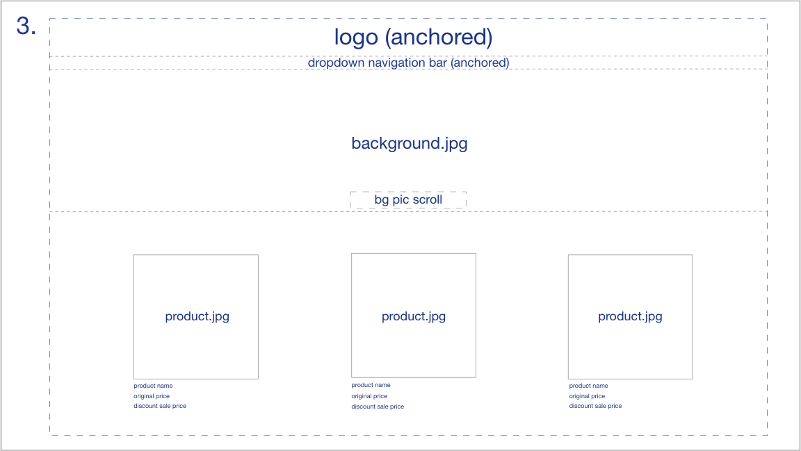

Hi! I'm Cathy and I love dogs(especially shiba inus) and am a huge fan of Lauv and his music. Bread and uniqlo are life. In my free time I enjoy journaling, hiking, and trying to do photography. My favorite ice cream flavor is rocky road and my favorite season is spring. I bop to a wide range of music so I'm always open to music recommendations! I hope to learn a lot in this class! :)
Top 3 favorite places to eat in Berkeley:
My Favorite Website: bora and
2. The goal of this website is to showcase its products and make them aesthetically appealing to potential customers for them to purchase. This is achieved through a minimalistic website design and using relatively simple and neutral font styles and color schemes. The site also offers product reviews and Q&A for customers. The target audience of the website is female teenagers as well as adults, with no particular age group.
4. My redesign addresses how cramped the layout of the original website was and makes the navigation bar more obvious and user-friendly. When using the original website, I noticed how it was unnecessary that the background image took up the entire screen and that the user had to scroll down in order to view the products. To fix this, I redesigned it so that the background would only take up the top portion of the webpage so the user would be able to immediately see upon first glance that the products are located on the same page(without scrolling). Another improvement is that the site logo and navigation bar are centered at the very top of the page in a non-transparent container, so the user would be able to see both better than in the original.